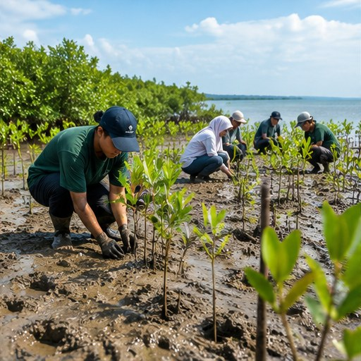

Kesiapsiagaan bencana
Kenali risiko di wilayah masing-masing, pahami jalur evakuasi, simpan nomor darurat, dan ikuti arahan resmi dari otoritas setempat.
Selain mengurangi emisi, kita perlu mempersiapkan diri menghadapi risiko yang sudah terjadi atau diperkirakan akan meningkat. Adaptasi yang baik disesuaikan dengan kondisi setempat.

Kenali risiko di wilayah masing-masing, pahami jalur evakuasi, simpan nomor darurat, dan ikuti arahan resmi dari otoritas setempat.
Perbaiki kebocoran, gunakan air sesuai kebutuhan, dan dukung perlindungan sumber air serta daerah resapan.
Kurangi barang sekali pakai jika memungkinkan, gunakan kembali barang yang masih layak, pilah sampah sesuai fasilitas yang tersedia, dan cegah sampah masuk ke saluran air.
Manfaatkan naungan, ruang hijau, ventilasi yang baik, dan kebiasaan aman saat cuaca panas. Perhatikan kelompok rentan dan pekerja luar ruang.
Pilih tindakan yang realistis, ukur hasilnya, dan ajak orang lain tanpa menyalahkan mereka yang memiliki keterbatasan pilihan.
Amati satu kebiasaan atau masalah lingkungan di sekitarmu.
Catat kondisi awal tanpa membuat klaim yang belum terukur.
Pilih satu perubahan kecil yang aman dan realistis.
Coba perubahan tersebut bersama keluarga atau teman.
Periksa apa yang berhasil dan kendala yang muncul.
Bagikan pembelajaran dan rencanakan langkah berikutnya.
Website ini bukan layanan peringatan dini. Untuk cuaca, bencana, dan petunjuk evakuasi terkini, ikuti BMKG, BPBD, dan pemerintah setempat.